问题 1
找不到
游戏发现路径不清晰，首页不能快速帮助用户判断有哪些值得看的游戏。
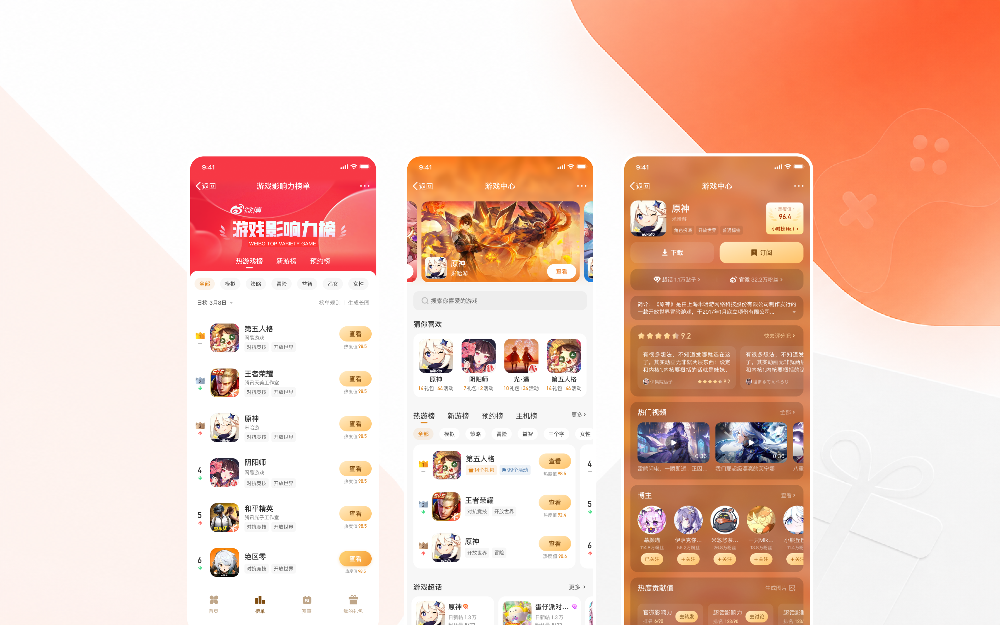
01 — 项目概览
微博游戏中心是平台内连接游戏内容、玩家社区和福利权益的重要入口。随着业务从「游戏下载」走向「玩家经营」，原有页面逐渐暴露出分发效率低、权益触达弱、社区关系割裂等问题。
这次改版不是一次单纯的界面翻新，而是围绕游戏分发链路进行的信息架构重构：让新用户更快发现游戏，让福利更容易被看见，让已关注游戏的用户有理由持续回来。
价值速览
业务结果
上线首周访问人数 +47.7%，访问次数 +34.8%
用户价值
缩短「找游戏—领福利—进社区—持续回访」路径
设计动作
重构首页信息架构、详情页信任信息、福利承载组件与话题页权益曝光
沉淀资产
形成游戏分发、福利转化、社区承接的模块化设计方法
改版前
首页
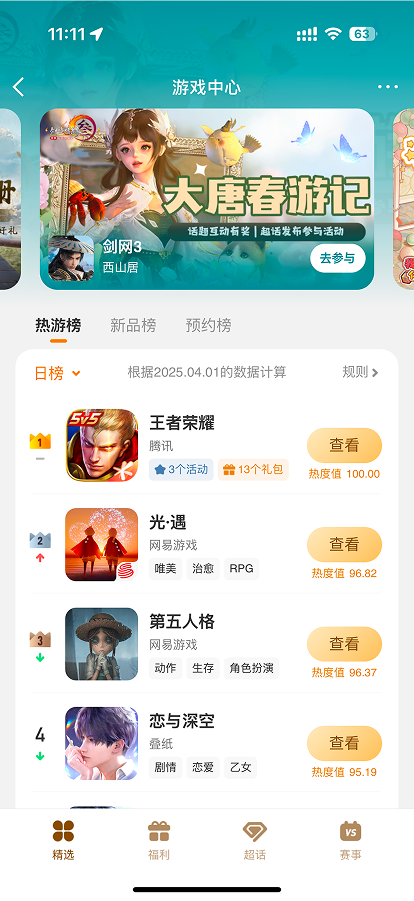
游戏详情页
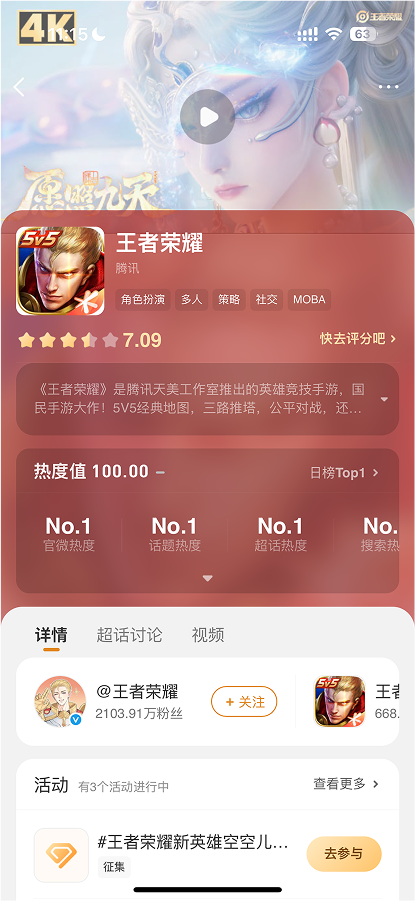
改版后
首页
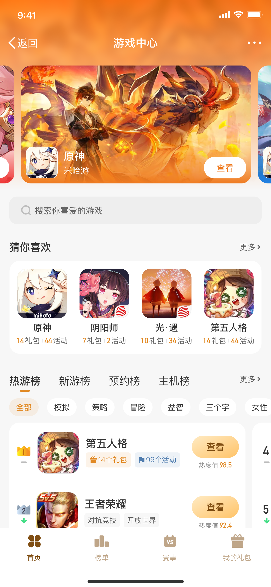
游戏详情页
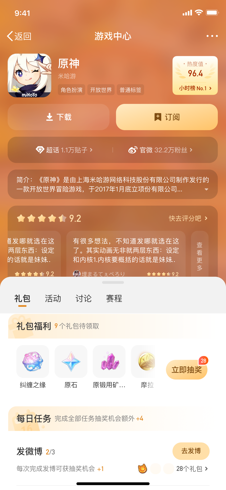
改版成效
分发入口扩展 首页从单一聚合入口扩展为搜索、专区、榜单、福利等多分发位。
触达路径缩短 用户从找游戏到进入目标内容的平均步骤减少，关键入口更直接。
推荐更精准 叠加用户信号与推荐引擎，让不同分发位承接不同兴趣和回访场景。
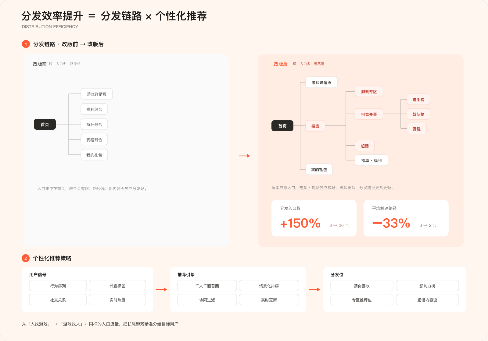
02 — 问题诊断
问题 1
游戏发现路径不清晰，首页不能快速帮助用户判断有哪些值得看的游戏。
问题 2
礼包、福利、预约奖励等高价值信息被埋在深层页面或长页面下方。
问题 3
游戏详情、福利权益、话题社区之间割裂，用户完成一次访问后缺少回访理由。
设计判断
因此，这个项目要解决的不是“页面不够好看”，而是“信息如何被更准确地分发，权益如何更高效地转化，社区关系如何进入游戏链路”。
03 — 机会判断
在竞品调研中，可以看到不同游戏分发入口各有侧重：TapTap 更强调内容深度和玩家评价，App Store 更偏标准化下载和编辑推荐，微信游戏则依托社交关系降低启动门槛。微博游戏中心的机会不在于复制其中任何一种模式，而是把微博已有的内容、热度和社区关系接入游戏分发链路。
用结构化导航提升找游戏效率
用热度、评价、超话入口增强决策信任
用礼包福利前置提升转化
用关注游戏专区承接老玩家回访
内容深度 / 玩家评价
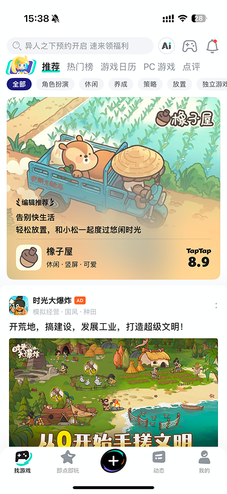
优势：评价内容深，玩家讨论密度高。
局限：轻量用户的查找成本偏高。
标准下载 / 编辑推荐
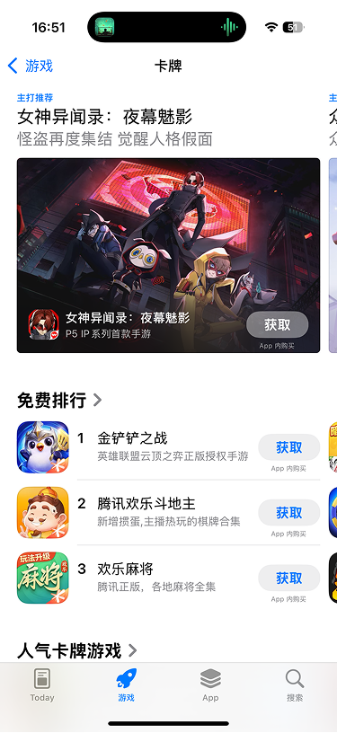
优势：下载链路标准，编辑推荐清晰。
局限：缺少玩家关系和社区讨论承接。
社交关系 / 低门槛启动
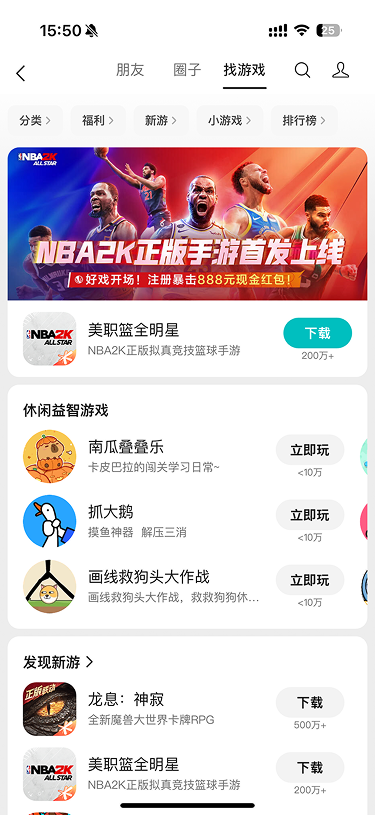
优势：社交启动门槛低，关系链天然存在。
局限：内容深度和游戏信息承载有限。
04 — 方案选择
我们比较过两种首页框架：
方案 A
优势：首屏即可承接多款游戏发现，适合扩大分发效率。
风险：需要更强的信息组织能力，避免首页变成资源堆砌。
方案 B
优势：对已关注单款游戏的用户更直接。
风险：新游戏发现效率低，整体分发广度不足。
最终选择
改版目标不是只服务单款游戏留存，而是提升平台级游戏发现、福利转化和社区承接效率，因此选择内容型聚合首页作为主框架。
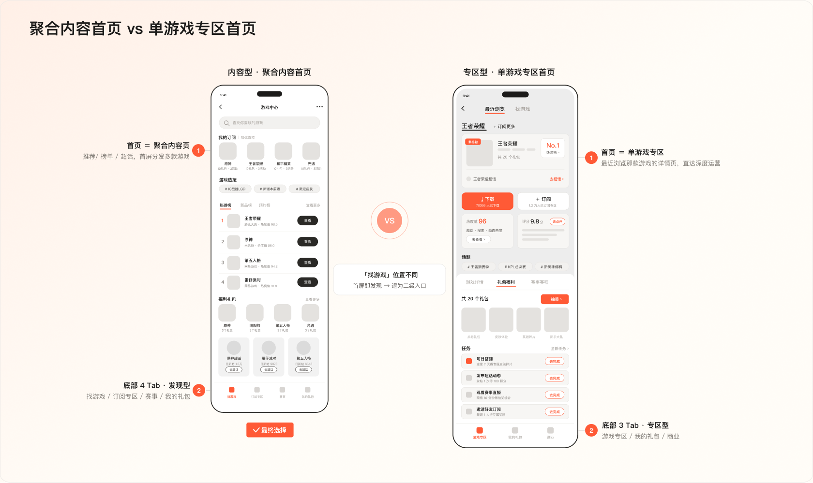
关键差异对比
| 维度 | 内容型 · 聚合内容首页 最终选择 | 专区型 · 单游戏专区首页 |
|---|---|---|
| 首页本质 | 聚合内容 / 分发页，首屏呈现多款游戏 | 最近浏览的单款游戏专区，直达详情 |
| 找游戏 / 发现 | 首屏即发现，分发广度优先 | 二级入口「找游戏」才进入大聚合页 |
| 底部导航 | 找游戏 · 订阅专区 · 赛事 · 我的礼包（4 Tab） | 游戏专区 · 我的礼包 · 商业（3 Tab） |
| 核心目标 | 拉新 · 发现 · 分发广度 | 单款留存 · 付费 · 商业化（深度） |
| 取舍 | 长尾 / 新游曝光强，单款深度运营弱 | 单款运营深，新游 / 长尾发现依赖二级入口 |
设计判断
用结构化承接确定性需求，用个性化提升分发效率，用社区信号增强决策信任。
05 — 核心方案
解决：新用户发现效率低，老用户回访效率低
首页不再对所有用户展示同一套内容，而是根据用户是否关注过游戏进行状态分流。新用户优先看到基于热度、社交关系和平台推荐的游戏内容，帮助他们快速建立兴趣判断；已关注用户则直接进入关注游戏的动态、福利和快捷入口，减少重复查找成本。
问题
所有用户看到同一套内容，既无法服务新用户发现，也没有提升老用户回访效率。
设计
根据关注状态区分首页内容，新用户看推荐，老用户看关注游戏。
价值
从统一分发转向按用户状态分发，降低首次浏览成本，也提升老用户回访效率。
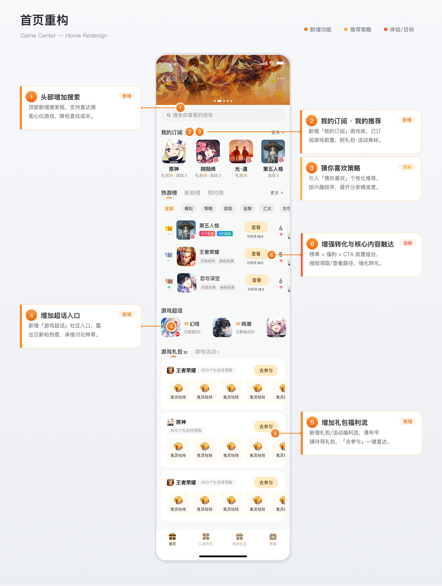
解决：用户无法快速判断游戏价值，关注后缺少持续回访入口
游戏详情页既是用户判断是否下载、预约或继续了解的关键页面，也是老玩家回访游戏内容、领取福利和发现相关游戏的固定入口。改版中，我把详情页拆成两个策略：头部强化社区信任，关注专区承接长期回访。
策略一
将超话入口、热度指数、玩家评价等信任信号前置到详情页头部，让用户在第一屏就能感知游戏活跃度和社区讨论氛围，辅助下载或预约决策。
策略二
面向已关注游戏的用户，设置关注游戏专区，通过横向 Tab 快速切换不同游戏，并在关注内容中插入相关推荐，形成“关注 — 回访 — 再发现”的循环。
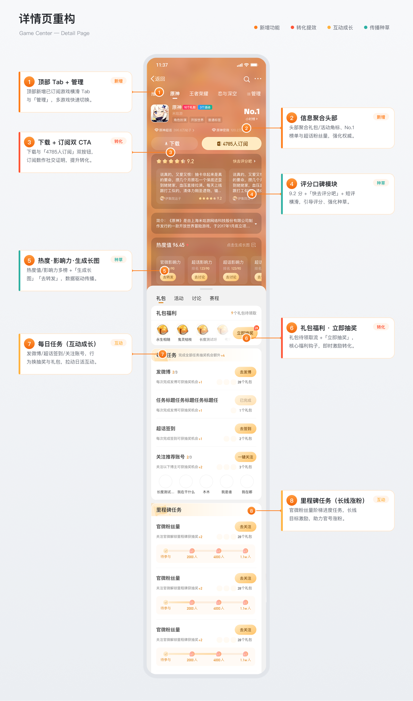
解决：礼包、预约奖励等权益被长页面吞掉
礼包、福利、预约奖励是游戏中心里最直接影响转化的内容，但原有页面中容易被页面长度吞掉。为了解决这个问题，我设计了可拖拽的半屏承载组件：默认半屏保留详情页上下文，同时让福利内容进入用户可见范围；当用户需要查看更多内容时，可以继续展开为全屏。
问题
福利入口被埋在深层页面或长页面下方，用户不容易发现。
设计
使用可拖拽半屏组件承载礼包和福利，默认聚焦福利 Tab。
价值
在不破坏详情页上下文的前提下，提升福利可见性，缩短从看到福利到领取福利的路径。
收起态
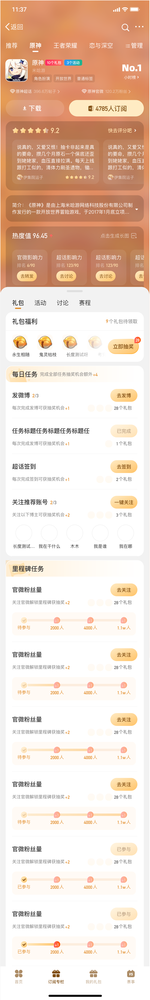
半屏态
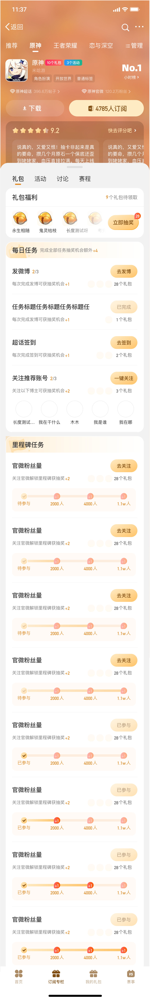
全屏态
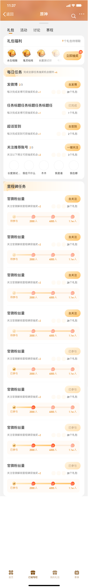
解决：游戏内容只被消费一次，缺少持续追踪理由
赛事内容不只是一个列表入口，用户进入后需要快速判断赛事阶段、对阵双方、比分状态以及后续可去哪里看详情或榜单。因此我将原来的赛程信息重构为赛事聚合卡片，用比赛状态、比分、队伍与榜单入口形成更清晰的观看路径。
问题
赛程信息分散，用户需要在列表中自行判断赛事阶段、对阵状态和可继续查看的内容。
设计
用赛事聚合卡片承载赛程周期、比分对阵、进行中状态，并补充赛程详情、选手榜和战队榜入口。
价值
让用户从“查赛程”进一步进入“看赛事、追榜单、回访关注内容”的连续路径。
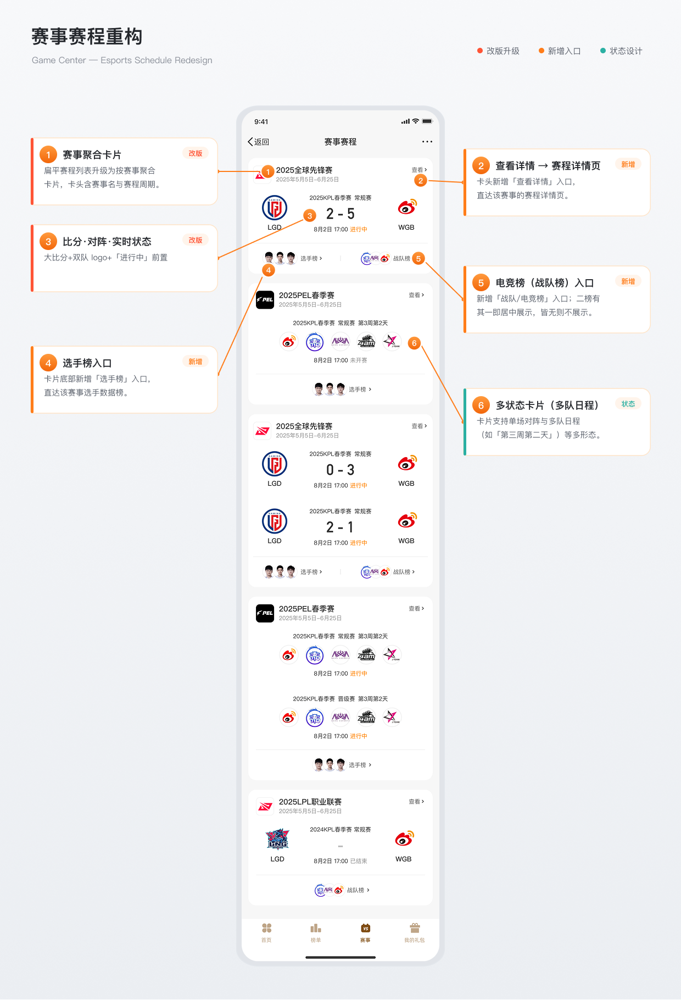
解决：玩家讨论场景和福利转化割裂
话题页是玩家讨论和内容消费最自然的场景，我在话题头部下方增加游戏权益曝光模块，将游戏热议榜、礼包数量、活动数量和当前转化入口聚合呈现，让用户不离开话题页也能判断游戏价值并进入点评、预约、下载或抽奖任务。
入口
在话题页信息流前置游戏卡片，承接高热讨论流量。
曝光
统一展示热议榜、礼包、活动三类高价值信息。
转化
根据点评、预约、下载等状态切换 CTA，减少跳转判断成本。
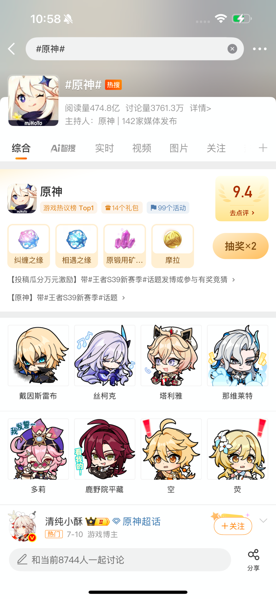
点评状态
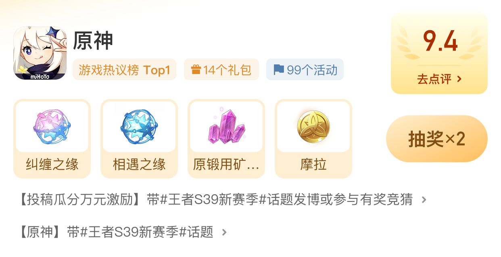
无权益状态
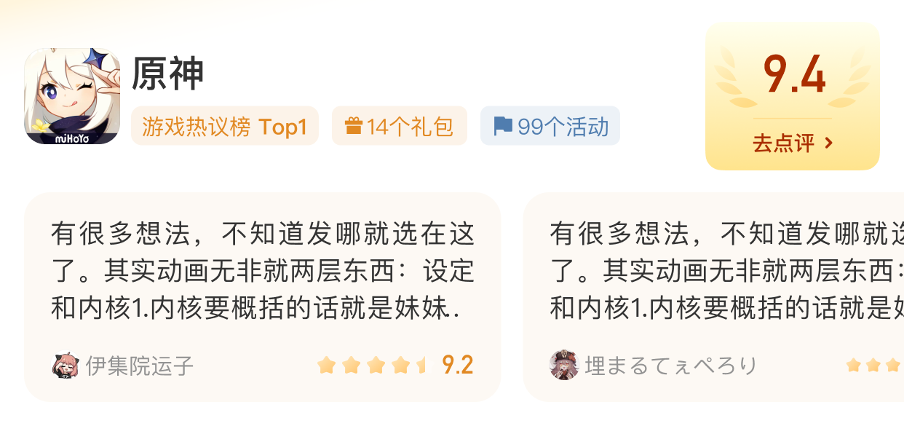
可预约状态
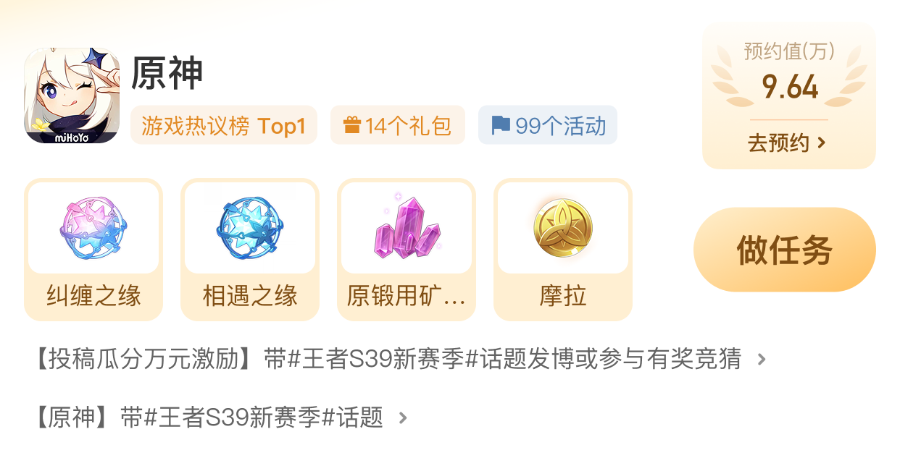
可下载状态
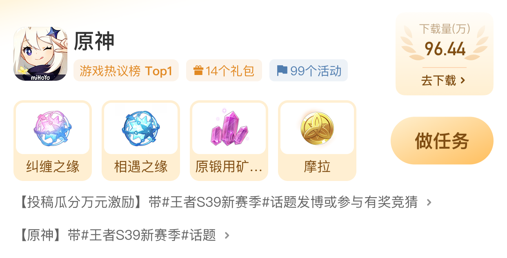
06 — 线上效果与复盘
线上效果
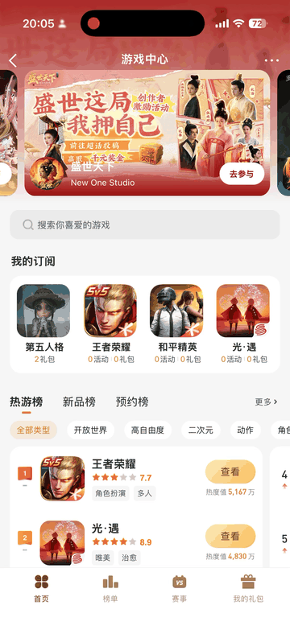
数据结果
访问人数
1.32w → 1.95w
+47.7%
访问次数
2.3w → 3.1w
+34.8%
设计验证
分层首页
提升了游戏发现效率。
福利组件
缩短了权益触达路径。
详情页与话题页
增强了社区承接和回访理由。
复盘与沉淀
这次改版验证了微博游戏中心不应只是游戏入口，而应作为「内容分发 + 福利转化 + 社区经营」的混合型阵地。